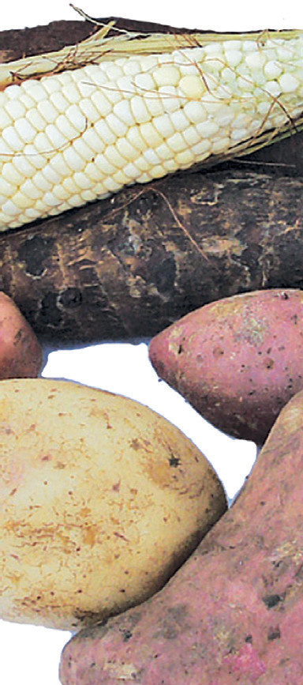

Student’s Book - Form Two
Biology for Secondary Schools
1


Think
The life of animals without nutrients
Concept of nutrition in animals
Task 1.1
Search for information from the library and internet sources on the concept of
nutrition in animals. Write short notes
on searched information.
Nutrition refers to the study of the
relationship between diet, health, and
diseases. There are two major types of
nutrition based on how organisms obtain
their food. These are autotrophic and
heterotrophic nutrition. Animal nutrition
involves nutrient requirement, mode of
taking food and its utilisation in the animal body. Animal nutrition also
focuses on the dietary nutrient needs of
animals. Animals are heterotrophs since
they depend on other organisms for their
nutritional needs.
Heterotrophic nutrition
Heterotrophs are organisms that
cannot make their own food but rely on
consuming other organism or organic
matter for energy and nutrients. The term
‘hetero’ means different and ‘trophy’
means feeding. Therefore, ‘heterotroph’
means ‘different feeding’. Heterotrophs
feed on different food substances
Nutrition in animals
Introduction
Animals get their food from plants or other animals. They exhibit a heterotrophic mode of nutrition. In this chapter, you will learn about animal nutrition which include food nutrients. The competences developed will enable you to maintain good eating habits so as to enhance general body health and well-being. This tendency will enable you to avoid the risks of getting nutritional diseases and disorders, as well as other nutritional problems.
Chapter One


08/04/2026 10:18:10